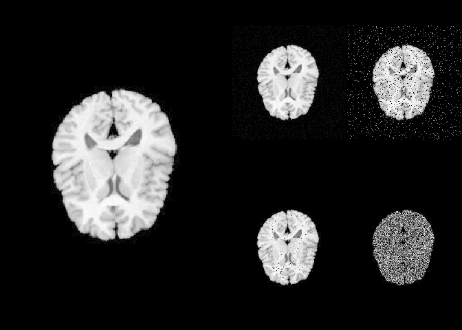

rpyANTs is a package that ports ANTsPy, a Python implementation of ANTs into R using R-Python interpreter package reticulate.
Installation
The installation requires one-line extra setup
install.packages("rpyANTs")
# set up ANTs
rpyANTs::install_ants()install_ants creates an isolated Python environment managed by RAVE. This environment does not conflict nor affect any existing Python installations.
How to use
To load ANTs
library(rpyANTs)
# Whether ANTs is available
ants_available()
# Load ANTs into R
antsIn R, we use $ to get module functions or class members. For example:
ants$add_noise_to_image
#> <ANTs Python Wrapper>
#> Help on function add_noise_to_image in module ants.utils.add_noise_to_image:
#>
#> add_noise_to_image(image, noise_model, noise_parameters)
#> Add noise to an image using additive Guassian, salt-and-pepper,
#> shot, or speckle noise.
#>
#> ANTsR function: `addNoiseToImage`
#>
#> Arguments
#> ---------
#> image : ANTsImage
#> scalar image.
#>
#> noise_model : string
#> 'additivegaussian', 'saltandpepper', 'shot', or 'speckle'.
#>
#> noise_parameters : tuple or array or float
#> 'additivegaussian': (mean, standardDeviation)
#> 'saltandpepper': (probability, saltValue, pepperValue)
#> 'shot': scale
#> 'speckle': standardDeviation
#>
#> Returns
#> -------
#> ANTsImage
#>
#> Example
#> -------
#> >>> import ants
#> >>> image = ants.image_read(ants.get_ants_data('r16'))
#> >>> noise_image = ants.add_noise_to_image(image, 'additivegaussian', (0.0, 1.0))
#> >>> noise_image = ants.add_noise_to_image(image, 'saltandpepper', (0.1, 0.0, 100.0))
#> >>> noise_image = ants.add_noise_to_image(image, 'shot', 1.0)
#> >>> noise_image = ants.add_noise_to_image(image, 'speckle', 1.0)
#>
#>
#>
#> *** Above is documentation for Python. Please use `$` in R accordingly
#> <function add_noise_to_image at 0x1125ab820>The following R code translates Python code into R:
# >>> img = ants.image_read(ants.get_ants_data('r16'))
img <- ants$image_read(ants$get_ants_data('r16'))
# >>> noise_image1 = ants.add_noise_to_image(img, 'additivegaussian', (0.0, 1.0))
noise_image1 <- ants$add_noise_to_image(
img, 'additivegaussian',
noise_parameters = tuple(0.0, 1.0)
)
# >>> noise_image2 = ants.add_noise_to_image(img, 'saltandpepper', (0.1, 0.0, 100.0))
noise_image2 <- ants$add_noise_to_image(
img, 'saltandpepper',
noise_parameters = tuple(0.1, 0.0, 100.0)
)
# >>> noise_image3 = ants.add_noise_to_image(img, 'shot', 1.0)
noise_image3 <- ants$add_noise_to_image(
img, 'shot',
noise_parameters = 1.0
)
# >>> noise_image4 = ants.add_noise_to_image(img, 'speckle', 1.0)
noise_image4 <- ants$add_noise_to_image(
img, 'speckle',
noise_parameters = 1.0
)To load imaging data into R
orig_array <- img$numpy()
noise_array1 <- noise_image1$numpy()
noise_array2 <- noise_image2$numpy()
noise_array3 <- noise_image3$numpy()
noise_array4 <- noise_image4$numpy()
# plot via R
layout(matrix(c(1,1,2,3,1,1,4,5), nrow = 2, byrow = TRUE))
par(mar = c(0.1, 0.1, 0.1, 0.1), bg = "black", fg = "white")
pal <- grDevices::gray.colors(256, start = 0, end = 1)
image(orig_array, asp = 1, axes = FALSE,
col = pal, zlim = c(0, 255))
image(noise_array1, asp = 1, axes = FALSE,
col = pal, zlim = c(0, 255))
image(noise_array2, asp = 1, axes = FALSE,
col = pal, zlim = c(0, 255))
image(noise_array3, asp = 1, axes = FALSE,
col = pal, zlim = c(0, 255))
image(noise_array4, asp = 1, axes = FALSE,
col = pal, zlim = c(0, 255))